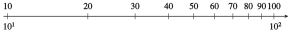

Exercises 5.8 Homework 5.4
¶1.
-
The log scale is labeled with powers of \(10\text{.}\) Finish labeling the tick marks in the figure with their corresponding decimal values.

-
The log scale is labeled with integer values. Label the tick marks in the figure with the corresponding powers of \(10\text{.}\)



2.
-
The log scale is labeled with powers of \(10\text{.}\) Finish labeling the tick marks in the figure with their corresponding decimal values.

-
The log scale is labeled with integer values. Label the tick marks in the figure with the corresponding powers of \(10\text{.}\)

3.
Plot the values on a log scale.
| \(x\) | \(0.075\) | \(1.3\) | \(4200\) | \(87,000\) | \(6.5\times 10^7 \) |

4.
Plot the values on a log scale.
| \(x\) | \(4\times 10^{-4} \) | \(0.008\) | \(0.9\) | \(27\) | \(90 \) |
5.
Estimate the decimal value of each point on the log scale.

\(1.58\text{,}\) \(6.31\text{,}\) \(15.8\text{,}\) \(63.1\)
6.
Estimate the decimal value of each point on the log scale.
7.
The log scale shows various temperatures in Kelvins. Estimate the temperatures of the events indicated.

\(1\text{,}\) \(80\text{,}\) \(330\text{,}\) \(1600\text{,}\) \(7000\text{,}\) \(4\times 10^7\)
8.
The log scale shows the size of various objects, in meters. Estimate the sizes of the objects indicated.

9.
Plot the values of \([H^+]\) in the section "Acidity and the pH Scale" on a log scale.
10.
Plot the values of sound intensity in the section "Decibels" on a log scale.
11.
The magnitude of a star is a measure of its brightness. It is given by the formula
where \(L\) is the luminosity of the star, measured in solar units. Calculate the magnitude of the stars whose luminosities are given in the figure.

Proxima Centauri: \(15.5\text{;}\) Barnard: \(13.2\text{;}\) Sirius: \(1.4\text{;}\) Vega: \(0.6\text{;}\) Arcturus: \(-0.4\text{;}\) Antares: \(-4.7\text{;}\) Betelgeuse: \(-7.2\)
12.
Estimate the wavelength, in meters, of the types of electromagnetic radiation shown in the figure.
13.
The risk magnitude of an event is defined by \(R = 10+ \log p\text{,}\) where \(p\) is the probability of the event occurring. Calculate the probability of each event.
The sun will rise tomorrow, \(R = 10\text{.}\)
The next child born in Arizona will be a boy, \(R = 9.7\text{.}\)
A major hurricane will strike North Carolina this year, \(R = 9.1\text{.}\)
A 100-meter asteroid will collide with Earth this year, \(R = 8.0\text{.}\)
You will be involved in an automobile accident during a 10-mile trip, \(R = 5.9\text{.}\)
A comet will collide with Earth this year, \(R = 3.5\text{.}\)
You will die in an automobile accident on a 1000-mile trip, \(R=2.3\)
You will die in a plane crash on a 1000-mile trip, \(R = 0.9\text{.}\)
\(1\)
\(0.5012\)
\(0.1259\)
\(0.01\)
\(0.000079\)
\(3.2\times 10^{-7} \)
\(2\times 10^{-8} \)
\(8\times 10^{-10} \)
14.
Have you ever wondered why time seems to pass more quickly as we grow older? One theory suggests that the human mind judges the length of a long period of time by comparing it with its current age. For example, a year is \(20\%\) of a \(5\)-year-old's lifetime, but only \(5\%\) of a \(20\)-year-old's, so a year feels longer to a \(5\)-year-old. Thus, psychological time follows a log scale, like the one shown in the figure.
Label the tick marks with their base \(10\) logarithms, rounded to \(3\) decimal places. What do you notice about the values?
By computing their logs, locate \(18\) and \(22\) on the scale
Four years of college seems like a long time to an \(18\)-year-old. What length of time feels the same to a \(40\)-year-old?
How long will the rest of your life feel? Let \(A\) be your current age, and let \(L\) be the age to which you think you will live. Compute the difference of their logs. Now move backward on the log scale an equal distance from your current age. What is the age at that spot? Call that age \(B\text{.}\) The rest of your life will feel the same as your life from age \(B\) until now.
Compute \(B\) using a proportion instead of logs.
15.
What number is halfway between \(10^{1.5}\) and \(10^2\) on a log scale?
What number is halfway between \(20\) and \(30\) on a log scale?
\(10^{1.75}\approx 56.2341\)
\(10^{(\log 600)/2}\approx 24.4949 \)
16.
What number is halfway between \(10^{3.0}\) and \(10^{3.5}\) on a log scale?
What number is halfway between \(500\) and \(600\) on a log scale?
17.
The distances to two stars are separated by \(3.4\) units on a log scale. What is the ratio of their distances?
\(10^{3.4} \approx 2512\)
18.
The populations of two cities are separated by \(2.8\) units on a log scale. What is the ratio of their populations?
19.
The probability of discovering an oil field increases with its diameter, defined to be the square root of its area. Use the graph to estimate the diameter of the oil fields at the labeled points, and their probability of discovery. (Source: Deffeyes, 2001)
A: \(a\approx 45\text{,}\) \(p \approx 7.4\%\text{;}\) B: \(a \approx 400\text{,}\) \(p \approx 15\%\text{;}\) C: \(a\approx 6000\text{,}\) \(p\approx 50\%\text{;}\) D: \(a \approx 13000\text{,}\) \(p \approx 45\%\)
20.
The order of a stream is a measure of its size. Use the graph to estimate the drainage area, in square miles, for streams of orders \(1\) through \(4\text{.}\) (Source: Leopold, Wolman, and Miller)

In Problems 21–40, use the appropriate formulas for logarithmic models.
21.
The hydrogen ion concentration of vinegar is about \(6.3\times 10^{-4}\text{.}\) Calculate the pH of vinegar.
\(3.2\)
22.
The hydrogen ion concentration of spinach is about \(3.2\times 10^{-6}\text{.}\) Calculate the pH of spinach.
23.
The pH of lime juice is \(1.9\text{.}\) Calculate its hydrogen ion concentration.
\(0.0126\)
24.
The pH of ammonia is \(9.8\text{.}\) Calculate its hydrogen ion concentration.
25.
A lawn mower generates a noise of intensity \(10^{-2}\) watts per square meter. Find the decibel level of the sound of a lawn mower.
\(100\)
26.
A jet airplane generates \(100\) watts per square meter at a distance of \(100\) feet. Find the decibel level for a jet airplane.
27.
The loudest sound emitted by any living source is made by the blue whale. Its whistles have been measured at \(188\) decibels and are detectable \(500\) miles away. Find the intensity of the blue whale's whistle in watts per square meter.
\(6,309,573\) watts per square meter
28.
The loudest sound created in a laboratory registered at \(210\) decibels. The energy from such a sound is sufficientto bore holes in solid material. Find the intensity of a\(210\)-decibel sound.
29.
At a concert by The Who in 1976, the sound level \(50\) meters from the stage registered \(120\) decibels. How many times more intense was this than a \(90\)-decibel sound (the threshold of pain for the human ear)?
\(1000\)
30.
The loudest scientifically measured shouting by a human being registered \(123.2\) decibels. How many times more intense was this than normal conversation at \(40\) decibels?
31.
The pH of normal rain is \(5.6\text{.}\) Some areas of Ontario have experienced acid rain with a pH of \(4.5\text{.}\) How many times more acidic is acid rain than normal rain?
\(12.6\)
32.
The pH of normal hair is about \(5\text{,}\) the average pH of shampoo is \(8\text{,}\) and \(4\) for conditioner. Compare the acidityof normal hair, shampoo, and conditioner.
33.
How much more acidic is milk than baking soda? (Refer to the table in this section..)
\(100\)
34.
Compare the acidity of lye and milk of magnesia. (Refer to the table in this section..)
35.
In 1964, an earthquake in Alaska measured \(8.4\) on the Richter scale. An earthquake measuring \(4.0\) is consideredsmall and causes little damage. How many times stronger was the Alaska quake than one measuring \(4.0\text{?}\)
\(\approx 25,000\)
36.
On April 30, 1986, an earthquake in Mexico City measured \(7.0\) on the Richter scale. On September 21, a second earthquake occurred, this one measuring \(8.1\text{,}\) hit Mexico City. How many times stronger was the September quake than the one in April?
37.
A small earthquake measured \(4.2\) on the Richter scale. What is the magnitude of an earthquake three times as strong?
\(4.7\)
38.
Earthquakes measuring \(3.0\) on the Richter scale often go unnoticed. What is the magnitude of a quake \(200\) times as strong as a \(3.0\) quake?
39.
The sound of rainfall registers at \(50\) decibels. What is the decibel level of a sound twice as loud?
\(53\)
40.
The magnitude, \(m\text{,}\) of a star is a function of its luminosity, \(L\text{,}\) given by
If one star is \(10\) times as luminous as another star, is the difference in their magnitudes?